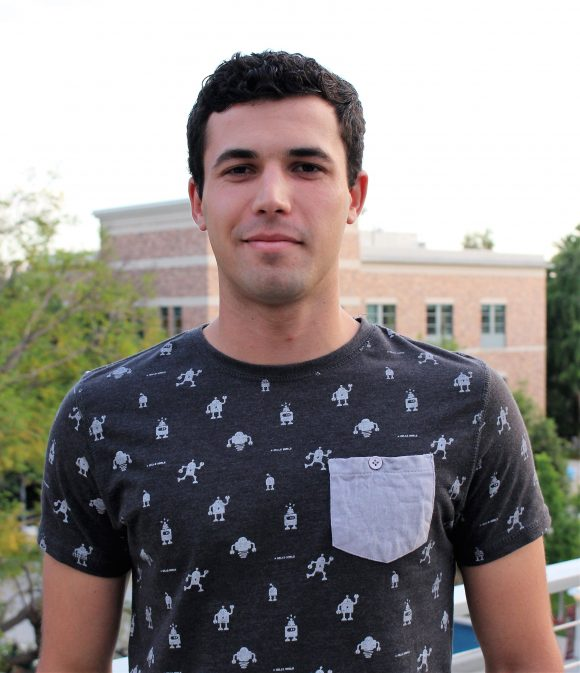

<div class="home">
  <div style="width: 100%; height: 100%;">
    <div style="padding-bottom:10px; width: 50%;">
      </img>
    </div>

      <h2> About Me </h2>
      I am currently pursuing a M.S. in Computational Data Science at Chapman University where I am a machine learning researcher in the <a class="page-link" href="http://mlat.chapman.edu" target="_blank">MLAT Lab</a>.
      I will graduate in May 2018 and go on for a PhD in Computer Science.
      <br><br>

      Outside of computer science, you can find me doing something outdoors.
      I love to hike, run and explore new places. I'll also crush you in a game of ping pong.

      <br><br>
      My research interests involve sensory motor integration, specifically vision and attention, and theories of learning (gradient descent) in the brain.
      My dream is to be a research scientist at a place like Google DeepMind or OpenAI.
      <br><br>

      <a href="https://scholar.google.com/citations?user=LT3AMTUAAAAJ&hl=en">Google Scholar</a> <br>

      <h2> Education </h2>

      <strong>Ph.D. Computer Science</strong><br>
      UC Irvine (2018 - ?)
      <br><br>

      <strong>M.S. Computational Data Science</strong><br>
      Chapman University (2017 - 2018)
      <br><br>

      <strong>B.S. Computer Science Magna Cum Laude</strong><br>
      Minor in Mathematics<br>
      Chapman University (2014 - 2017)

    <br>
  </div>
  <!---
  <a class="page-link" href="https://www1.chapman.edu/~ott109/MachineLearning.html">ML Projects</a>
  <br>
  <a class="page-link" href="{{ site.url }}/assets/JordanOttCV.pdf">CV</a>
  <br><br>

  <h1 class="page-heading">Posts</h1>

  <ul class="post-list">
    {% for post in site.posts %}
      <li>
        <span class="post-meta">{{ post.date | date: "%b %-d, %Y" }}</span>

        <h2>
          <a class="post-link" href="{{ post.url | prepend: site.baseurl }}">{{ post.title }}</a>
        </h2>
      </li>
    {% endfor %}
  </ul>
-->
</div>
